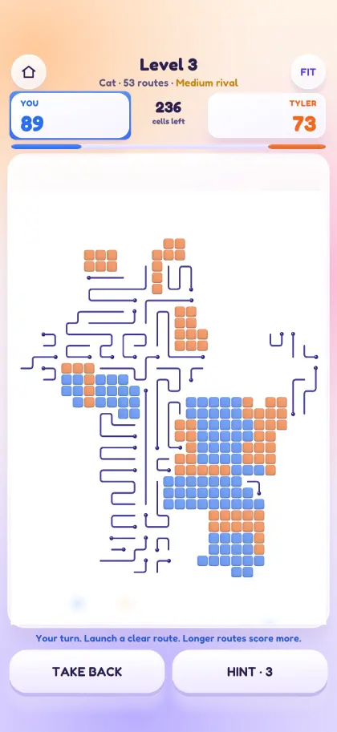

Route Duel: the route-clearing duel
By the Sultan of Niyyat team, who make Puzzle Jar. Last updated .
Route Duel is the game Puzzle Jar grew from. You and a computer rival take turns launching routes off a board packed with them; a route can only leave if its path is clear, and it scores its length in cells. When the board is empty, whoever has more cells wins. It also has Solo Run, where you clear a board alone against a clock, the only timed mode in the whole app.

On this page: 13 questions
- How do you play Route Duel?
- What happens if I tap a blocked route?
- Is the Route Duel rival a real person?
- How do you win a Route Duel level?
- What is the best strategy in Route Duel?
- Does the Route Duel rival get stronger or weaker?
- What is Solo Run in Route Duel?
- Is there a time limit in Route Duel duels?
- What are the picture boards in Route Duel?
- What do hints and take backs do in Route Duel?
- What happens when I lose a duel?
- How hard does Route Duel get?
- Why is Route Duel the last game on the level road?
How do you play Route Duel?#
Tap a route whose head has a clear path off the board. It slides away, and every cell it covered is added to your score and colored in your color. Then the rival takes its turn. The bar at the top shows both scores and how many cells are still left on the board, so you always know how close the duel is.
What happens if I tap a blocked route?#
It bumps into whatever is in its way and you lose your turn, so the rival moves next. The route stays where it was. Before tapping, follow the route's path to the edge of the board with your eye: one cell of another route in the way is enough to block it.
Is the Route Duel rival a real person?#
No. The rival is always the computer, playing on your phone. Names such as Tyler or Emma are just names, picked at random for each new level; a retry of the same level keeps the same name, like a rematch. There is no online play against other people in Puzzle Jar.
How do you win a Route Duel level?#
Finish with more cells than the rival once the board is cleared. A lost duel doesn't move you on: you need to win the level to reach the next picture, even if you only lose by a few cells. A level 1 guided duel teaches the rules and can't be lost.
What is the best strategy in Route Duel?#
Look at what each launch frees, not just how long it is. Taking a route away can open the path of another route, and if that one is long, the rival gets it next turn. A shorter route that frees nothing is often better than a long one that hands over a bigger prize. Late in a duel, count the cells left: sometimes you only need to stay ahead, not score big.
Does the Route Duel rival get stronger or weaker?#
Both, depending on how you play. It adjusts to you: if you are struggling, it plays a little weaker, and if you are winning easily, a little stronger. Each level also has its own rival strength, shown under the level title, such as "Medium rival".
What is Solo Run in Route Duel?#
A timed mode with no rival. You clear a tightly packed picture board on your own before the clock runs out, allowing about 4 seconds a route and never less than 2 minutes. A blocked tap costs 5 seconds. Once per run, when time is up, you can watch a video for 60 more seconds. Solo Run opens once you reach Route Duel level 6, and its button sits on Route Duel's card in Free play.
Is there a time limit in Route Duel duels?#
No. Normal duels have no clock at all; you can think as long as you like before each launch. The clock belongs only to Solo Run, which you choose to play. It is the one countdown anywhere in Puzzle Jar's 20 games.
What are the picture boards in Route Duel?#
Each level after the first is a picture, such as a cat, filled with our own routes. The outlines come from Google's Noto Emoji pictures (credited in Settings). There are 340 of them after the guided first duel, 341 levels in all. As the routes leave, the picture fills in with your color and the rival's.
What do hints and take backs do in Route Duel?#
A hint makes your best route glow, the one our solver would launch now. Take back undoes your last move, so you can try a different route if your launch freed something big for the rival. Both come from the shared counts used by every game in the app, and the first three take backs on each level are free. Solo Run has no take back.
What happens when I lose a duel?#
The level plays again, or you can use a rescue. A rescue takes you back a few moves against a tired rival that plays weaker, so you can win from a position you already reached. Each time you lose, the result card lets you pay for a rescue with a short video you choose to watch or with one of your shared rescues.
How hard does Route Duel get?#
Levels come in rounds of easy, medium and hard, with every fourth hard level a boss and an easy level after each hard one. We measured every board with computer players: about 3-13% lose an easy level, about 35-61% a hard one and up to about 86% a boss on the first try. Big pictures with many routes take more planning.
Why is Route Duel the last game on the level road?#
Because it is one of the two hardest, together with Quilt Pins, and the road saves them for the end of each lap through the 20 games. It is also where the app began: Puzzle Jar was called Route Duel before it grew into a collection, and players kept their levels when it changed.